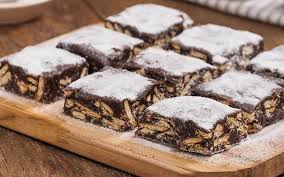
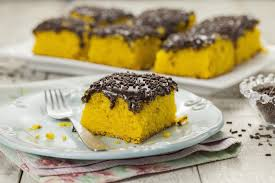

Receitas de Doces
postado em 08 de junho de 2024 Este Blog tem o intuito de te ajudar a fazer receitas simples e gostosas de doces para adoçar o seu dia. No primeiro momento, estou colocando a disposição de 4 receitas de doces que são muito simples de serem feitas em casa, como por exemplo: Palha Italiana Bombom de travessa Banoffe Bolo de Cenoura
Leia maisReceitas e Modo de preparo
postado em 08 de junho de 2024 Cada página será direcionada ao doce específico e terá em cada uma delas os ingredientes necessários e o modo de preparo específico de cada receita.
Leia mais